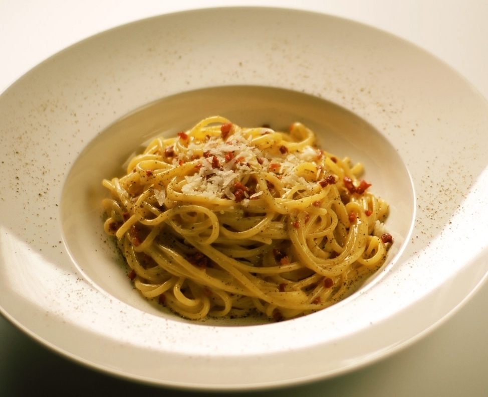

SPAGHETTI CARBONARA

Description
Carbonara is an Italian pasta dish from Rome made with eggs, hard cheese, cured pork, and black pepper. The dish arrived at its modern form, with its current name, in the middle of the 20th century.
The cheese is usually Pecorino Romano, Parmigiano-Reggiano, or a combination of the two. Spaghetti is the most common pasta, but fettuccine, rigatoni, linguine, or bucatini are also used. Normally guanciale or pancetta are used for the meat component, but lardons of smoked bacon are a common substitute outside Italy.
Ingredients
- Spaghetti 0.7 lb (320 g)
- Guanciale 5 oz (150 g
- Egg yolks 6 - average size
- Pecorino Romano cheese ½ cup (50 g)
- Black pepper to taste
Steps
- Put a pot of salted water on the burner to cook the pasta
- Remove the pork rind from the guanciale and cut it first into slices and then into strips about 1/2" (1cm) thick
- Put the pieces into a non-stick pan and brown for about 15 minutes over medium heat
- Put spaghetti in boiling water and cook for the time indicated on the package
- Pour the yolks into a bowl, add most of the Pecorino cheese, season with black pepper and whip by hand
- Add a tablespoon of cooking water to dilute the mixture and stir
- In the meantime the guanciale will be cooked, turn off the burner and set it aside
- Drain the pasta al dente directly into the pan with the guanciale and stir it briefly to season it
- Remove from heat and pour the mixture of eggs and pecorino cheese into the pan. Mix quickly to combine
- To make it very creamy, if necessary, you can add a little cooking water to your pasta
- Serve spaghetti carbonara immediately with the remaining pecorino cheese and ground black pepper on top
HOME